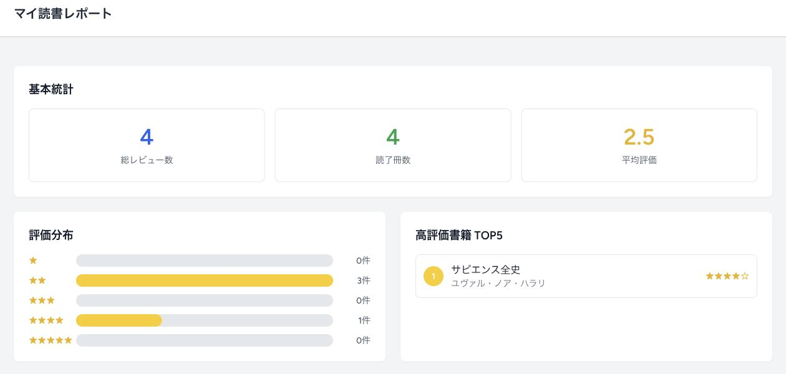

COACHTECH 模擬案件・バックエンド開発
BookShelf
仕様の確認からDB設計・API・テストまで担当
提供されたBlade画面と要件書をもとに、仕様の詳細化・DB設計・書籍レビューアプリのバックエンド・テストを担当した模擬案件です。

- 制作形態
- COACHTECH 模擬案件（画面提供）
- 担当
- 仕様の詳細化・PMへの確認・DB設計・バックエンド実装・API・テスト。画面デザインとBladeの制作は担当範囲に含みません。
- 期間・状態
- 2026年8〜9月。現在は制作に一区切りついています。
- 公開範囲
- コード・画面を公開／操作デモなし
ターゲット・ペルソナ
設計上の想定
- ターゲット
- 読書の記録やレビューを残したい人
- ペルソナ
- 同じ本を読み返してレビューを投稿し、読了冊数や好みのジャンルを振り返りたい人。
ヒアリングから実装へ
集計仕様をPMと確認
一人のユーザーが投稿したレビュー
| 書籍 | レビュー数 |
|---|---|
| 本A | 2件 |
| 本B | 1件 |
- 総レビュー数
- 3件
- 読了冊数
- 2冊
要件の確認で、数え方が決まる。
最初の提案では、同じ人が同じ本に投稿するレビューを1件までとしていました。ヒアリングの回答では、複数件の投稿が可能と確認しています。
そこでマイ読書レポートについても確認し、「自分が投稿したレビューだけを対象とする」「読了冊数は書籍の重複を除いて数える」という仕様を整理しました。
同じレビュー集合から、二つの数字を出す。
ログインした本人のレビューを取得し、投稿件数はそのまま数えます。読了冊数は、書籍IDの重複を除いてから数えます。
// 投稿した回数
$reviews->count();
// レビューした書籍の種類数
$reviews->pluck('book_id')
->unique()->count();数え方をテストに残す
重複レビューの集計
既存のFeature Testでは、ユーザーと2冊の本を用意し、片方の本に2件、もう片方に1件のレビューを登録します。レポートのURLへアクセスし、読了冊数が2冊となることを確認する構成です。
別のテストでは、他のユーザーのレビューが集計へ混ざらないことも扱っています。
ReportTest.php の確認内容
本Aのレビューを2件作成
本Bのレビューを1件作成
↓
本人として /reports にアクセス
↓
books_read === 2テストを読みやすく要約したものです。実行ログや、今回の再実行結果ではありません。
集計の範囲を決める
複数ジャンルを集計
一冊が「小説」と「ミステリー」の両方に属する場合、そのレビューを両方のジャンルへ反映します。ジャンルごとに平均評価と件数を計算し、上位5件を表示する仕様です。
関連する書籍とジャンルをまとめて取得し、Collectionの flatMap と groupBy で集計しています。
ほかに担当したバックエンド
担当したバックエンド
- 基本機能
- 書籍・ジャンル・レビューのCRUD、お気に入り、いいね、ランキング。書籍とレビューの編集・削除は、作成した本人に制限します。
- API
- 一覧・詳細の取得は公開し、書き込みにはSanctum認証を要求。更新・削除は書籍の所有者に制限します。
- 日次処理
- 日本時間20時に読書計画の状態を更新。期限の3日前・当日・3日後に、アプリ内通知を保存します。
- 検索・外部連携
- Google Books APIを使ったISBN-13検索と、キーワード・ジャンル・並び順を組み合わせた書籍検索。
制作範囲と使用技術
制作概要
- 技術
- PHP 8.5 / Laravel 10 / MySQL 8.4 / Docker
Fortify / Sanctum / Google Books API / PHPUnit
掲載事例はヒアリング資料、コード、既存テストをもとに整理しています。商用運用の実績ではありません。テストはコードを確認したもので、掲載時の全件再実行結果ではありません。
集計の実装とテストを、GitHubで確認できます。